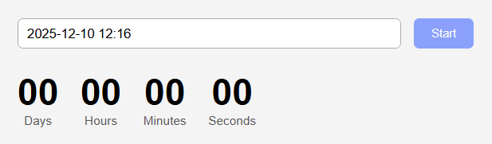
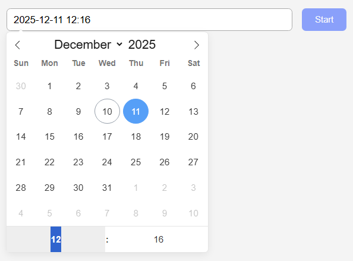
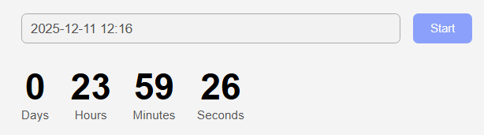

<!DOCTYPE html> <html lang="uk"> <head> <meta charset="UTF-8" /> <meta name="viewport" content="width=device-width, initial-scale=1.0" /> <title>Countdown Timer</title> <!-- flatpickr CSS --> <link rel="stylesheet" href="https://cdn.jsdelivr.net/npm/flatpickr/dist/flatpickr.min.css"> <!-- iziToast CSS --> <link rel="stylesheet" href="https://cdn.jsdelivr.net/npm/izitoast/dist/css/iziToast.min.css"> <style> body { font-family: Arial, sans-serif; background: #f4f4f4; padding: 40px; } .container { max-width: 520px; margin: 0 auto; } .controls { display: flex; gap: 15px; margin-bottom: 25px; } input#datetime-picker { flex-grow: 1; padding: 8px 10px; border: 1px solid #aaa; border-radius: 6px; font-size: 15px; } button[data-start] { padding: 8px 20px; background: #446aff; border: none; border-radius: 6px; color: #fff; cursor: pointer; transition: .25s; } button[data-start]:disabled { opacity: 0.6; cursor: not-allowed; } .timer { display: flex; gap: 25px; } .field { text-align: center; } .value { display: block; font-size: 42px; font-weight: bold; } .label { display: block; font-size: 14px; color: #555; } </style> </head> <body> <div class="container"> <div class="controls"> <input type="text" id="datetime-picker" /> <button type="button" data-start disabled>Start</button> </div> <div class="timer"> <div class="field"> <span class="value" data-days>00</span> <span class="label">Days</span> </div> <div class="field"> <span class="value" data-hours>00</span> <span class="label">Hours</span> </div> <div class="field"> <span class="value" data-minutes>00</span> <span class="label">Minutes</span> </div> <div class="field"> <span class="value" data-seconds>00</span> <span class="label">Seconds</span> </div> </div> </div> <!-- flatpickr JS --> <script src="https://cdn.jsdelivr.net/npm/flatpickr"></script> <!-- iziToast JS --> <script src="https://cdn.jsdelivr.net/npm/izitoast/dist/js/iziToast.min.js"></script> <!-- наш скрипт --> <script src="./1-timer.js"></script> </body> </html>
let userSelectedDate = null; let timerInterval = null; const refs = { startBtn: document.querySelector('[data-start]'), dateInput: document.querySelector('#datetime-picker'), days: document.querySelector('[data-days]'), hours: document.querySelector('[data-hours]'), minutes: document.querySelector('[data-minutes]'), seconds: document.querySelector('[data-seconds]'), }; refs.startBtn.disabled = true; // ──────────────────────────────── // ІНІЦІАЛІЗУЄМО FLATPICKR // ──────────────────────────────── flatpickr('#datetime-picker', { enableTime: true, time_24hr: true, defaultDate: new Date(), minuteIncrement: 1, onClose(selectedDates) { const date = selectedDates[0]; if (!date || date <= new Date()) { refs.startBtn.disabled = true; iziToast.warning({ message: 'Please choose a date in the future', position: 'topRight', }); return; } userSelectedDate = date; refs.startBtn.disabled = false; }, }); // ──────────────────────────────── // КНОПКА START // ──────────────────────────────── refs.startBtn.addEventListener('click', () => { if (!userSelectedDate) return; refs.startBtn.disabled = true; refs.dateInput.disabled = true; timerInterval = setInterval(() => { const timeLeft = userSelectedDate - new Date(); if (timeLeft <= 0) { clearInterval(timerInterval); updateUI({ days: 0, hours: 0, minutes: 0, seconds: 0 }); refs.dateInput.disabled = false; return; } const formatted = convertMs(timeLeft); updateUI(formatted); }, 1000); }); // ──────────────────────────────── // ОБНОВЛЕННЯ ІНТЕРФЕЙСУ // ──────────────────────────────── function updateUI({ days, hours, minutes, seconds }) { refs.days.textContent = days; refs.hours.textContent = addLeadingZero(hours); refs.minutes.textContent = addLeadingZero(minutes); refs.seconds.textContent = addLeadingZero(seconds); } // ──────────────────────────────── // ФОРМАТУВАННЯ 0 // ──────────────────────────────── function addLeadingZero(value) { return String(value).padStart(2, '0'); } // ──────────────────────────────── // РОЗПИЛЕННЯ MS // ──────────────────────────────── function convertMs(ms) { const second = 1000; const minute = second * 60; const hour = minute * 60; const day = hour * 24; const days = Math.floor(ms / day); const hours = Math.floor((ms % day) / hour); const minutes = Math.floor(((ms % day) % hour) / minute); const seconds = Math.floor((((ms % day) % hour) % minute) / second); return { days, hours, minutes, seconds }; }


